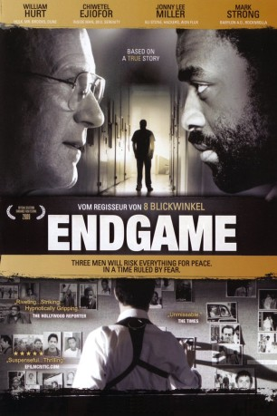
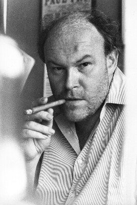
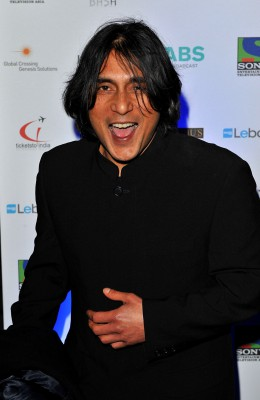
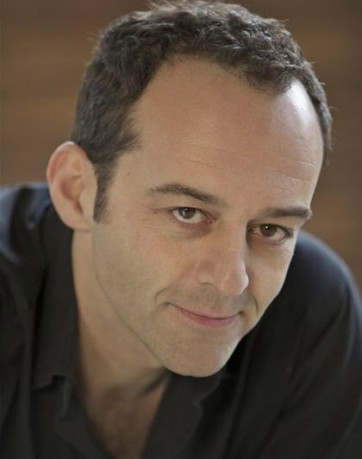
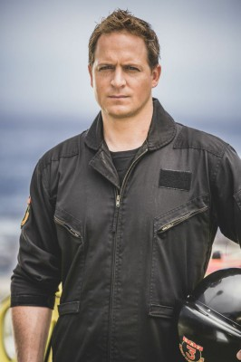

#9820 Die Mandela-Verschwörung
Alternativ: Endgame
 
 IMDB-Wertung: 6.3 / 10
IMDB-Wertung: 6.3 / 10  Metascore: 0
Metascore: 0 
Im Jahr 1985 hatten viele jede Hoffnung auf Frieden in Südafrika fast aufgegeben. Das weiße Apartheid-Regime wurde zunehmend brutaler bei den Versuchen, die schwarze Bevölkerung zu kontrollieren. Die Widerstandsbewegung wurde als Folge der Weigerung der Regierung, Nelson Mandela, Botschafter der friedlichen Opposition frei zu lassen zunehmend militant und militärisch. Das System der Apartheid war offensichtlich am Ende. Alles, was es noch mit dessen Vertretern zu besprechen gab, waren die Bedingungen, unter denen die Apartheid ein für alle Mal begraben sein würde.
Jahr: 2009
Dauer: 108 Minuten
FSK: 16
Land: England Studio: S.A.D. Home EntertainmentTonspuren: DTS - ,
Untertitel:
Auflösung: 1080p (1920x1080) Größe: 11161 MB
Genre: Drama, Geschichte
Regisseur: Pete Travis
Drehbuch: Robert Harvey, Paula Milne
Soundtrack: Martin Phipps
Darsteller:
 William Hurt als Professor Willie Esterhuyse
William Hurt als Professor Willie Esterhuyse Chiwetel Ejiofor als Thabo Mbeki
Chiwetel Ejiofor als Thabo Mbeki Jonny Lee Miller als Michael Young
Jonny Lee Miller als Michael Young Mark Strong als Dr. Neil Barnard
Mark Strong als Dr. Neil Barnard Clarke Peters als Nelson Mandela
Clarke Peters als Nelson Mandela John Kani als Oliver Tambo
John Kani als Oliver Tambo Derek Jacobi als Rudolph Agnew
Derek Jacobi als Rudolph Agnew-  Timothy West als P.W. Botha
 Matthew Marsh als F.W. de Klerk
Matthew Marsh als F.W. de Klerk Patrick Lyster als Sampie Terreblanche
Patrick Lyster als Sampie Terreblanche-  Ramon Tikaram als Aziz Pahad
-  Danny Scheinmann als Albie Sachs
- Amelia Bullmore als Gill
- Trevor Sellers als Tony Trew
- Moshidi Motshegwa als Sebolela
 Langley Kirkwood als Warrant Officer Jack Swart
Langley Kirkwood als Warrant Officer Jack Swart Grant Swanby als President's Agent Botha
Grant Swanby als President's Agent Botha David Tennant als Himself - Host
David Tennant als Himself - Host-  Karl Thaning als F.W. de Klerk's agent
- Lizanne Tulip als High Profile Banker
- Mike Huff als Willem de Klerk
- Stephen Jennings als Kobie Coetsee
- Porteus Xandau als Christo Brand
- David Henry als Professor Marinus Wiechers
- Bo Petersen als Esterhuyse's Wife
- Gabi Scheibert als Esterhuyse's Daughter
- Thomas Lockyer als Anthony Sampson
- Jacques Strydom als Roadblock Policeman
- Faith Ndukwana als Winnie Mandela
- Faniswa Yisa als Woman Pick-up Driver
- Tshamano Sebe als Black Drinker
- Marko van der Colff als Bizos
- Unathi Dyantyi als Youth #1 Hate
- Vicky Davis als White Newscaster
- Batsile Ramasodi als Zambian Newscaster
- Jonathan Dimbleby als English Newscaster
- Violet Gonda als Zimbabwean Newscaster
- Robert Coxwell als South African Newscaster
- Kas Graham als Protestor
- Chumani Pan als Youth #1 - Shabeen
Datei: X:\2009(G-M)\Mandela-Verschwörung, Die (2009, FSK16, 1920x1080).mkv seit 29.10.2018
Festplatte: HD 2009(G-Z)-2010(A-F)
 Es gibt insgesamt 82 Filme in der Gruppe '2009(G-M)'
Es gibt insgesamt 82 Filme in der Gruppe '2009(G-M)'